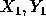
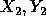
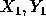
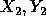

| Tin Cutter |
In a Tin Cutting factory there is a machine for cutting parts from tin plates. It has an extraordinarily sharp knife able to make horizontal or vertical segment cuts in the tin plates. Each cutting process consists of a sequence of such cuts. Each segment cut is given by its endpoints that are always located inside the tin plate. During the cutting process some parts of tin plate can fall out and so some holes in the plate can emerge.
Factory management needs to predict the number of holes in the plate at the end of the given sequence of cuts. Write a program that answers this question. Single segment cuts are not considered to be holes.
Here there are examples of some situations that can arise after cutting:
two holes two holes one hole one hole
The input file consists of blocks of lines. Each block except the last
describes one cutting
process. In the first line of the block there is a number  indicating the number of segment
cuts in the cutting process. These cuts are defined by the following N
lines. The line defining one
segment cut has the form
indicating the number of segment
cuts in the cutting process. These cuts are defined by the following N
lines. The line defining one
segment cut has the form  where  and 
are the co-ordinates of the end
points of the segment cut. They are separated by one space. The co-ordinates
are integers and
always define horizontal or vertical segment (i.e. segment parallel
with x or y axis).
where  and 
are the co-ordinates of the end
points of the segment cut. They are separated by one space. The co-ordinates
are integers and
always define horizontal or vertical segment (i.e. segment parallel
with x or y axis).
The last block consists of just one line containing 0.
The output file contains the lines corresponding to the blocks in the input file. Each such line contains the number of holes that remain in the tin plate after the execution of the corresponding cuts.
There is no line in the output file corresponding to the last ``null'' block of the input file.
4 0 1 1 1 1 1 1 0 1 0 0 0 0 0 0 1 2 0 1 2 1 1 2 1 0 0
1 0